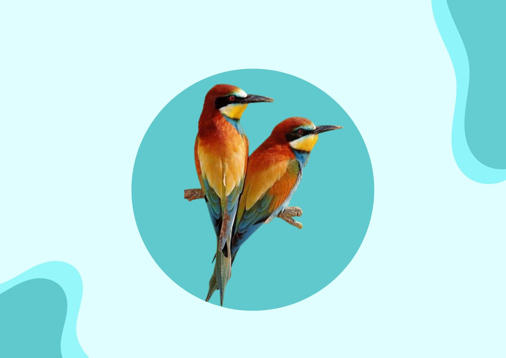

Doenças comuns e como previní-las
Bronquite infecciosa, Gripe aviária, Coriza infecciosa, Salmonelose, Laringotraqueíte infecciosa e Doença de Newscastl

Bronquite infecciosa
É uma doença viral aguda e altamente contagiosa que afeta galinhas em todas as idades . A bronquite atinge além do trato respiratório, os rins e aparelho reprodutivo das aves. O vírus está presente em todos os países do mundo.
Para prevenir a bronquite infecciosa, recomenda-se a implementação de um programa de vacinação adequado. Existem vacinas vivas atenuadas, que podem ser administradas por gota ocular, por nebulização, ou na água de bebida.
Gripe aviária
No Brasil, não existem casos da doença, porém os produtores se mantêm em alerta. A enfermidade é o nome dado a uma variedade do vírus influenza, o H5N1, hospedado por aves, mas que pode infectar os mamíferos. Hoje, a doença está concentrada no sudeste asiático, mas existem casos na Turquia, Romênia e Inglaterra. Além de preocupar os órgãos oficiais de saúde pública, a gripe aviária já trouxe inúmeros prejuízos na economia mundial.
É importante ressaltar que, atualmente, não existe um tratamento para a doença. Assim, caso uma ave contraia a gripe, a única solução é o abate do animal, com o intuito de evitar que ele contamine outros. Para evitar tal situação, recomenda-se que as aves de granja não tenham contato com pássaros ou aves silvestres, que os processos de higienização e desinfecção sejam intensificados, assim como o controle da qualidade da água e de quem tem acesso às aves.
Coriza infecciosa
A enfermidade é bastante comum no Brasil e afeta aves de qualquer idade e linhagem. Entre os sinais clínicos estão: corrimento nasal, catarro, conjuntivite, edema ao redor dos olhos; em alguns casos, ocorre o fechamento das pálpebras e até a destruição do globo ocular. As aves diminuem a postura e ficam com as asas caídas. A ocorrência é mais comum no outono e o diagnóstico é difícil. Além do manejo adequado, para prevenir é recomendado adquirir aves sem problemas respiratórios e de diferentes faixas etárias.
Para prevenir é necessário evitar a friagem, a umidade, o vento direto nas aves e conservar as instalações bem limpas. Desta forma, se consegue evitar a coriza. Também é possível evitar através de vacinas contra a enfermidade
Salmonelose
A enfermidade é bastante comum no Brasil e afeta aves de qualquer idade e linhagem. Entre os sinais clínicos estão: corrimento nasal, catarro, conjuntivite, edema ao redor dos olhos; em alguns casos, ocorre o fechamento das pálpebras e até a destruição do globo ocular. As aves diminuem a postura e ficam com as asas caídas. A ocorrência é mais comum no outono e o diagnóstico é difícil. Além do manejo adequado, para prevenir é recomendado adquirir aves sem problemas respiratórios e de diferentes faixas etárias.A salmonelose é provocada por bactérias e causa três tipos de doença: pulorose, tifo aviário e paratifo aviário. As enfermidades podem acometer as aves em qualquer idade, sendo mais comuns em jovens. A alta densidade de alojamento de animais aves favorece a instalação, multiplicação e disseminação de agentes patogênicos. Atualmente, as enfermidades são razoavelmente controladas por vacinação e monitoramento.
Para sua prevenção é fundamental obter aves de origem segura e devidamente vacinadas. Para salmonela, a vacinação deve ocorrer ainda no incubatório, ou antes de iniciar a fase produtiva.
Laringotraqueíte infecciosa
A laringotraqueíte infecciosa (LTI) das aves é uma doença respiratória altamente contagiosa, que acomete principalmente galinhas e outras aves. É uma doença viral aguda do trato respiratório das galinhas e pode causar grandes perdas econômicas devido à alta taxa de mortalidade. Embora seja controlada em muitos países, podem ocorrer surtos esporádicos. O vírus entra na ave pela via respiratória e se replica na laringe, na traqueia e nos pulmões. Os sinais clínicos aparecem de seis a 12 dias após o contágio e as manifestações podem variar de uma infecção grave a formas mais brandas.
Prevenção: Vacinação das aves com vacina recombinante. Realizar higiene, limpeza e desinfecção do ambiente das aves do plantel, além de realizar o controle de pessoas e veículos que adentrem o ambiente.
Doença de Newscastle
Causada pelo Vírus da Doença de Newcastle (NDV), a enfermidade preocupa também devido ao impacto na economia, já que o Brasil é o maior exportador de carne de frango do mundo. A patologia atinge tanto aves domésticas quanto silvestres. Em alguns países, é considerada endêmica, o que gera embargos econômicos nas regiões produtoras. Ela é facilmente confundida com outras doenças, por isso é necessário que um médico veterinário seja procurado em caso de suspeita.
Como prevenção da Newcastle, o lote onde há sinais clínicos da doença deve ser exterminado. Outra medida preventiva é deixar as aves do plantel distantes das aves silvestres. A vacinação periódica deve ser uma constante no aviário, assim como a desinfecção dos galpões, com adoção de programas de biosseguridade.